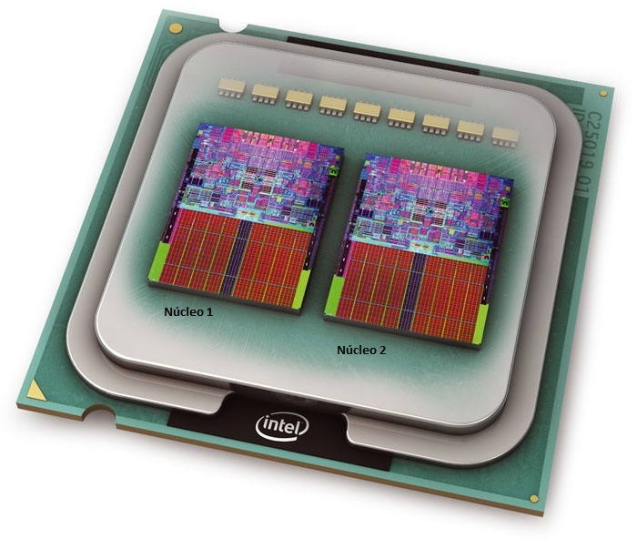
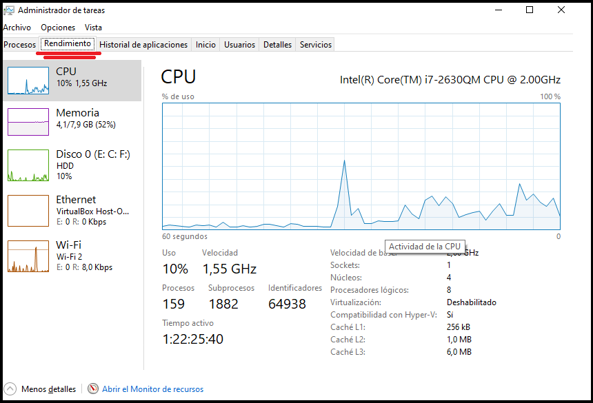
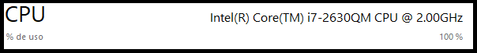
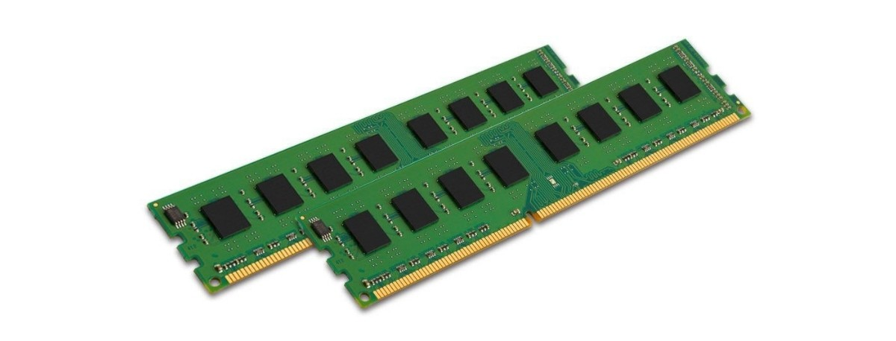
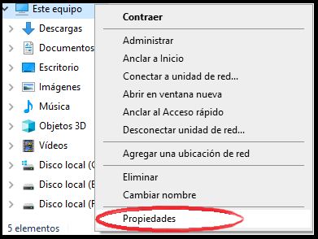
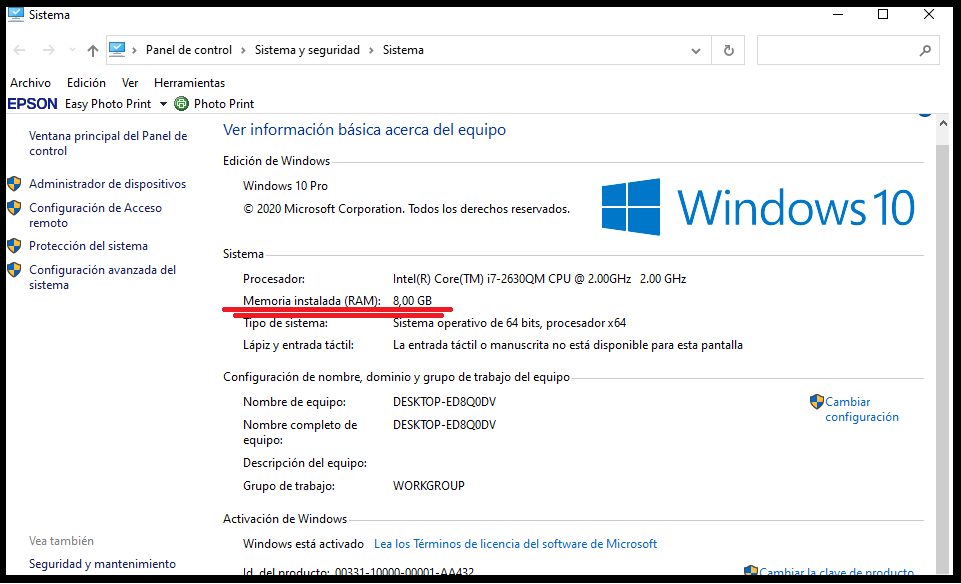
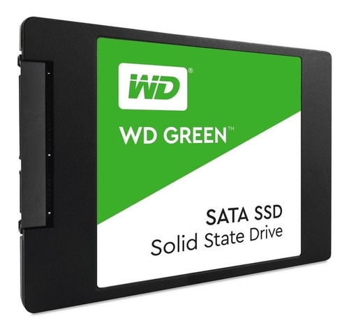

CARACTERISTICAS DE LOS PROCESADORES
Número de Nucleos
Los núcleos o Cores son los encargados de realizar una multitud de tareas de forma simultánea para que el ordenador no se sature ni tenga que trabajar forzosamente,

¿Cómo saber cunatos nucleos tiene mi procesador?
Para poder ver esto y mas cualidades de del procesador debemos precionar CTRL + SHIFT + ESC y entramos en la pestaña RENDIMIENTO.

Aqui podemos ver el número de nucleos la Velocidad Base y en la parte de arriba podemos ver el modelo del procesador de que generación es etc...

El que la CPU de tu ordenador tenga 32 o 64 bits depende de algunos aspectos, siendo el principal de ellos la edad. Prácticamente todos los ordenadores que te llevas pudiendo comprar en la última década tienen casi seguro una arquitectura de 64 bits. Pero todavía hay personas e instituciones con equipos muy antiguos de 32 bits, o sea que tanto los sistemas operativos como los desarrolladores de software siguen dándole soporte.
MEMORIA RAM

Las siglas RAM significan “Random Access Memory” traducido al español es “Memoria de Acceso Aleatorio” lo cual quiere decir que los datos no se guardan de manera permanente, Esta memoria es el lugar adonde van a ejecutarse y a permanecer activos los diversos programas, desde el propio sistema operativo hasta las aplicaciones que utilicemos.
Para saber cuanta memoria RAM tinen nuestra pc basta con ir al explorador de archivos dar click izquierdo en "este equipo" y dar clik en la pestaña de "Propiedades" mismo que nos mostrar una pestaña mostrando las caracteristicas del equipo.

En esta ventana visualizaremos las propiedades del equipo como la memoria RAM o los bits del Procesador .

Almacenamiento
Esto mas tinen que ver a la capacidad de almacenar archivos de nuestros discos duros que tengamos en nuestras computadoras.

En la actualidad se tiene dos tipos de discos duros, los discos duros solidos y los discos duros normal. la diferencia primordial entre estos dos esque el los discos duros solidos son mucho mas rapidos que los discos duros corrientes, al igual que los discos duros normales hay de varias capacidades que van desde los 128 GB hasta 16 TB que se usan con un formato de archivos especifico.
